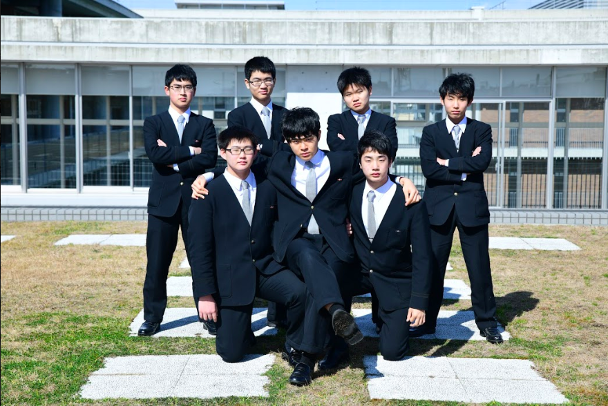

執行部
61年目となる聖光祭、
私たち、執行部が皆様のご来場を心からお待ちしています。
SeikoFesta61st
執行部
61年目となる聖光祭、
私たち、執行部が皆様のご来場を心からお待ちしています。
美化部門
ゴミの受け取りや収集、校内清掃を担当する美化部門員は、
緑色のTシャツを着用しています。（美化部門長 阿南哲史 ）
装飾部門
日々積み重ねた努力と、洗練された技。最高の祭を鮮やかに彩る装飾部門員は、
紺色のTシャツを着用しています（装飾部門長 菅達幹 ）
会計部門
模擬店、屋台等のレジを担当する、
会計部門員は紫色のTシャツを着用しています。（会計部門長 西堀輝彦 ）
管理部門
机や椅子、その他の備品や資材の管理を担当する、
管理部門はえんじ色のTシャツを着用しています。（管理部門長 ）